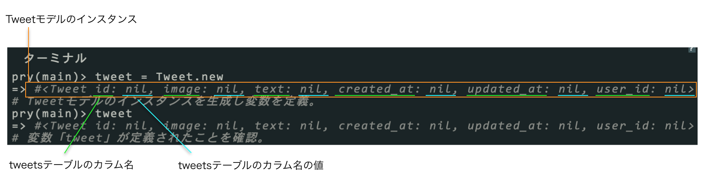

この章ではLesson4のRails1-3を終了された方を対象に構成されています。終了していない方はLesson4のRails1-3を終えてから、この章に挑戦してみてください。
ここではLesson4で作成したpictweetを元に rails consoleを使いインスタンスの生成や、取得の方法を学んでいきましょう。
以下のようにコマンド打ち、最後にpwdと打ってカレントディレクトリを確認してください。
1 2 3 4 5 6 7 8 9 10 11 12 13 14 |
$ cd ~
# ホームディレクトリに移動
$ ls
# 今いるディレクトリに存在する、ディレクトリ名、ファイル名を表示。「projects」というディレクトリがあると思います。
$ cd projects/
#「projects」ディレクトリに移動
$ cd pictweet/
# 「pictweet」ディレクトリに移動
$ pwd
# 現在のディレクトリのパスを表示。「/User/ユーザ名/projects/pictweet」と表示されます。
|
pwdと打った時に/User/ユーザ名/projects/pictweetと表示されれば大丈夫です。
ターミナルでrails cと打ちましょう。すると以下のように入力待機状態になります。
1 2 3 4 5 |
$ rails c
# rails c 起動
pry(main)>
# rails c の入力待機状態になります。
|
rails c上でtweet = Tweet.newと打ちTweetモデルのインスタンスを生成します。
1 2 3 4 5 6 |
pry(main)> tweet = Tweet.new
=> #<Tweet id: nil, name: nil, image: nil, text: nil, created_at: nil, updated_at: nil>
# Tweetモデルのインスタンスを生成し変数を定義。
pry(main)> tweet
=> #<Tweet id: nil, name: nil, image: nil, text: nil, created_at: nil, updated_at: nil>
# 変数「tweet」が定義されたことを確認。
|
Tweet.newはTweetモデルのインスタンスを生成するメソッドです。
rails cはメソッドを打つと、=>でそのメソッドの返り値を表示してくれます。
Tweet.newの返り値を見てみると
#<Tweet id: nil, name: nil, image: nil, text: nil, created_at: nil, updated_at: nil>
というものが返ってきているのが確認できます。これがTweetモデルのインスタンスです。
■ インスタンス

このようにrails cは、ブラウザを通さずにDB(データベース)のデータを操作したり,定義したメソッドを簡単に試す事が出来ます。
では、ここからは実際の問題に入っていきます。すべてrails c 上で実行してください。
ここではインスタンスの生成の仕方についての問題です。
1 2 3 |
pry(main)> tweet = Tweet.new
=> #<Tweet id: nil, name: nil, image: nil, text: nil, created_at: nil, updated_at: nil>
# Tweetモデルのインスタンスを生成し変数を定義。
|
前記したようにTweet.newでTweetモデルのインスタンスの生成をすることが出来ました。
しかし、生成されたインスタンスのそれぞれのカラムの値は空(nil)ですね。
このことを踏まえて問題に挑戦しましょう。
上述の通り、newメソッドでは、それぞれのインスタンスのカラムの値が空(nil)になっています。以下のように、newメソッドに引数を渡すことで、カラムの値がセットされた状態でインスタンスを生成することができます。カラムを複数指定する場合は、カンマで区切ることを忘れないようにしましょう。
1 |
pry(main)> tweet = Tweet.new(name: "sample", text: "sample-text")
|
| カラム | 値 |
|---|---|
| nameカラム | ご自身のお名前を入力(例 「keita」という文字列。英字で書きましょう。) |
| textカラム | 「rails now. it's so fun!!」という文字列 |
| imageカラム | 「http:://image.jpg」という文字列 |
1 2 3 4 5 |
pry(main)> #newメソッドを用いたインスタンスを生成するコマンドを打ってください
=> #<Tweet id: nil, name: "keita", image: "http://image.jpg", text: "rails now. it's so fun!!", created_at: nil, updated_at: nil>
pry(main)> #インスタンスを保存するメソッドを用いたコマンドを打ってください
=> true
|
以下のように、インスタンスは生成された後でもカラムの値を変更することができます。
1 2 3 4 5 6 7 8 9 10 11 12 13 14 15 16 17 18 |
# textカラムの値を"first"とする
pry(main)> tweet = Tweet.new(text: "first")
=> #<Tweet id: nil, text: "first", image: nil, created_at: nil, updated_at: nil, user_id: nil>
# tweetのtextカラムの値を表示する
pry(main)> tweet.text
=> "first" # firstになっている
# tweetのtextカラムの値を変更する
pry(main)> tweet.text = "second"
=> "second"
# tweetのtextカラムの値を表示する
pry(main)> tweet.text
=> "second" # secondになっている
# saveメソッドで保存する
pry(main)> tweet.save
|
| カラム | 値 |
|---|---|
| nameカラム | ご友人のお名前を入力(例 「satoshi」という文字列。英字で書きましょう。) |
| textカラム | 「oh!!happy day!」という文字列 |
| imageカラム | 「http:://happy.jpg」という文字列 |
Tweetモデルの空のインスタンスを生成し、tweetという変数に代入してください。
1 2 |
pry(main)> tweet = Tweet.new
=> #<Tweet id: nil, name: nil ,image: "nil", text: "nil", created_at: nil, updated_at: nil>
|
1 2 3 4 5 6 7 8 9 10 11 |
pry(main)> #nameカラムに「satoshi」を代入するコマンドを打ってください
=> "satoshi"
pry(main)> #textカラムに「oh!!happy day!」を代入するコマンドを打ってください
=> "oh!!happy day!"
pry(main)> #imageカラムに「http:://happy.jpg」を代入するコマンドを打ってください
=> "http:://happy.jpg"
pry(main)> #インスタンスを保存するメソッドを用いたコマンドを打ってください
=> true
|
newメソッドだけでは、インスタンスは生成されるものの、テーブルには保存されませんでした。そのため、saveメソッドを用いる必要がありましたが、createメソッドを使えばnewとsaveを同時に行ってくれます。createメソッドは、newメソッドと同様に引数でカラムを指定することで値をセットすることができます。
| カラム | 値 |
|---|---|
| nameカラム | ご自身のお名前を入力(例 「keita」という文字列。英字で書きましょう。) |
| textカラム | 「i am happy boy!」という文字列 |
| imageカラム | 「http:://happy_boy.jpg」という文字列 |
1 2 |
pry(main)> #Tweetモデルのインスタンスを生成し、保存するコマンドを打ってください。
=> #<Tweet id: 8, name: "keita", image: "http:://happy_boy.jpg", text: "i am happy boy!", created_at: "2015-01-12 11:53:49", updated_at: "2015-01-19 08:36:55">
|
これまでは様々な方法でインスタンスの生成、保存を行ってきました。
ここからは、データベースに保存されているインスタンスの取得方法を問題にしています。
モデルに対してallメソッドを使うことで、そのモデルに保存されている全てのインスタンスを取得することができます。これはテーブルに保存されているレコードと対応しています。
1 2 3 4 5 |
pry(main)> #tweetsテーブルに保存されている全てのインスタンスを取得するコマンドを打ってください。
=> [#<Tweet id: 6, name: "keita", image: "http://image.jpg", text: "rails now. it's so fun!!", created_at: "2015-01-12 07:55:38", updated_at: "2015-01-12 07:55:38">,
#<Tweet id: 7, name: "satoshi", image: "http://happy.jpg", text: "oh!!happy day!", created_at: "2015-01-12 07:56:21", updated_at: "2015-01-12 07:56:21">,
#<Tweet id: 8, name: "keita", image: "http://happy_boy.jpg", text: "i am happy boy!", created_at: "2015-01-12 07:56:21", updated_at: "2015-01-12 07:56:21">]
# ※pictweetを作成した時に生成したインスタンスも表示されます。
|
モデルに対し、findメソッドを使うと特定のidのレコード一つを取得することができます。findメソッドは数字を引数にとり、その数字をidとするレコードを取得します。
1 2 |
pry(main)> #tweetsテーブルで、idが7のインスタンスを取得するコマンドを打ってください。
=>#<Tweet id: 7, name: "satoshi", image: "http://happy.jpg", text: "oh!!happy day!", created_at: "2015-01-12 07:56:21", updated_at: "2015-01-12 07:56:21">
|
特定の条件を満たすインスタンス（レコード）を取得するにはfind_byメソッドを使います。ただし、条件に満たすものが複数あった場合、idが一番若い一件だけを返します。
そのため、主に１件しか存在しないことが期待される場合にfind_byメソッドを使います。なお、引数はnewメソッド等と同様にカラムと値を指定します。
1 2 |
pry(main)> #tweetsテーブルで、nameがご自身の名前(keita)のインスタンスを取得するコマンド打ってください。
=>#<Tweet id: 6, name: "keita", image: "http://image.jpg", text: "rails now. it's so fun!!", created_at: "2015-01-12 07:55:38", updated_at: "2015-01-12 07:55:38">
|
特定の条件を満たすインスタンス（レコード）を全て取得する場合はwhereメソッドを使います。find_byメソッドと同様に引数でカラムと値を指定することで、その指定に一致するレコードを全て取得します。なお、返り値は条件を満たすインスタンスにより構成された配列のような形となっていて、eachメソッド等が使えます。
1 2 3 4 |
pry(main)> #tweetsテーブルで、nameがご自身の名前(keita)のインスタンスを全て取得するコマンドを打ってください。
=> [#<Tweet id: 6, name: "keita", image: "http://image.jpg", text: "rails now. it's so fun!!", created_at: "2015-01-12 07:55:38", updated_at: "2015-01-12 07:55:38">,
#<Tweet id: 8, name: "keita", image: "http://happy_boy.jpg", text: "i am happy boy!", created_at: "2015-01-12 07:56:21", updated_at: "2015-01-12 07:56:21">]
#pictweetを作成した時に生成したnameがご自身の名前のインスタンスも表示されます。
|
limitメソッドを利用すると、取得するレコードの数を制限することができます。制限する数は、limitメソッドの引数で指定します。以下のようにすると、tweetsテーブルから取得してきたレコードのうち5つだけの配列を作成します。
1 2 3 4 5 |
#tweetsテーブルから5件だけレコードを取得する
pry(main)> Tweet.limit(5)
=> [#<Tweet id: 1, name: "keita", image: "http://image.jpg", text: "rails now. it's so fun!!", created_at: "2015-01-12 07:55:38", updated_at: "2015-01-12 07:55:38">,
#<Tweet id: 2, name: "satoshi", image: "http://happy.jpg", text: "oh!!happy day!", created_at: "2015-01-12 07:56:21", updated_at: "2015-01-12 11:52:53">#<Tweet id: 3, name: "abe", image: "http://image2.jpg", text: "rails rails rails!", created_at: "2015-01-12 07:55:38", updated_at: "2015-01-12 07:55:38">,
#<Tweet id: 4, name: "tsugita", image: "http://happy2.jpg", text: "rails new", created_at: "2015-01-12 07:56:21", updated_at: "2015-01-12 11:52:53">#<Tweet id: 5, name: "tadachi", image: "http://image3.jpg", text: "brand new world.", created_at: "2015-01-12 07:55:38", updated_at: "2015-01-12 07:55:38">]
|
1 2 3 |
pry(main)> #tweetsテーブルでの最初の２件のみ取得するコマンドを打ってください
=> [#<Tweet id: 6, name: "keita", image: "http://image.jpg", text: "rails now. it's so fun!!", created_at: "2015-01-12 07:55:38", updated_at: "2015-01-12 07:55:38">,
#<Tweet id: 7, name: "satoshi", image: "http://happy.jpg", text: "oh!!happy day!", created_at: "2015-01-12 07:56:21", updated_at: "2015-01-12 11:52:53">]
|
テーブルから取得してきたレコードの塊に対してorderメソッドを利用すると、様々な条件でレコードの順番を並び替えることができます。例えば以下のようにorder('カラム名 DESC')とすると、指定したレコードのカラムの中身の数値が大きい順にレコードを並び替えてくれます。
1 2 3 4 5 6 7 |
#tweetsテーブルの全てのレコードを取得
pry(main)> tweets = Tweet.all
=> [#<Tweet id: 1, name: "keita", image: "http://image.jpg", text: "rails now. it's so fun!!", created_at: "2015-01-12 07:55:38", updated_at: "2015-01-12 07:55:38">,
#<Tweet id: 2, name: "satoshi", image: "http://happy.jpg", text: "oh!!happy day!", created_at: "2015-01-12 07:56:21", updated_at: "2015-01-12 11:52:53">・・・]
#取得してきたレコードをidが大きい順に並び替える
pry(main)> tweets.order('id DESC')
=> [#<Tweet id: 2, name: "satoshi", image: "http://happy.jpg", text: "oh!!happy day!", created_at: "2015-01-12 07:56:21", updated_at: "2015-01-12 11:52:53">, #<Tweet id: 1, name: "keita", image: "http://image.jpg", text: "rails now. it's so fun!!", created_at: "2015-01-12 07:55:38", updated_at: "2015-01-12 07:55:38">]
|
1 2 3 4 5 |
pry(main)> #最新順に並び替えをするコマンド打ってください。
=> [#<Tweet id: 8, name: "keita", image: "http://happy_boy.jpg", text: "i am happy boy!", created_at: "2015-01-12 07:56:21", updated_at: "2015-01-12 07:56:21">,
#<Tweet id: 7, name: "satoshi", image: "http://happy.jpg", text: "oh!!happy day!", created_at: "2015-01-12 07:56:21", updated_at: "2015-01-12 07:56:21">,
#<Tweet id: 6, name: "keita", image: "http://image.jpg", text: "rails now. it's so fun!!", created_at: "2015-01-12 07:55:38", updated_at: "2015-01-12 07:55:38">,]
#pictweetを作成した時に生成したインスタンスも表示されます。
|
ここまでで、インスタンスの生成、保存、取得を行ってきました。
ここらからは、取得したインスタンスの情報を更新するということを問題にしています。
テーブルに保存されているレコードは、以下のように「インスタンスの取得」 → 「インスタンスのカラムの更新」という流れで特定のインスタンスのカラムの値を更新することができます。
属性値の更新には、 update というメソッドを利用します。updateメソッドの引数は、(カラム名: 更新したい値, カラム名: 更新したい値・・・)とします。
1 2 3 4 5 6 7 8 9 10 11 12 13 |
# レコードの取得
pry(main)> tweet = Tweet.find(1)
=> #<Tweet id: 1, name: "keita", image: "http://image.jpg", text: "rails now. it's so fun!!", created_at: "2015-01-12 07:55:38", updated_at: "2015-01-12 07:55:38">
# レコードのカラムの値の更新
pry(main)> tweet.update(text: "Rails is beautiful!!")
=> (1.0ms) BEGIN
SQL (2.3ms) UPDATE `tweets`
中略
(12.0ms) COMMIT
=> true
# カラムの値が更新されている
pry(main)> tweet.text
=> "Rails is beautiful!!"
|
| カラム | 値 |
|---|---|
| textカラム | 「update is beautifull」という文字列 |
| imageカラム | 「 http://update.jpg 」という文字列 |
1 2 3 4 5 |
pry(main)> #問題３で生成したインスタンスを取得するコマンドを打ってください。
=> #<Tweet id: 8, name: "keita", image: "http:://happy_boy.jpg", text: "i am happy boy!", created_at: "2015-01-12 11:53:49", updated_at: "2015-01-19 08:36:55">
pry(main)> #問題３で生成したインスタンスを更新するコマンドを打ってください。
=> #<Tweet id: 8, name: "keita", image: "http://update.jpg", text: "update is beautifull", created_at: "2015-01-12 11:53:49", updated_at: "2015-01-12 11:53:49">
|
以上です。
 大宅 誠人
大宅 誠人{kind=link}